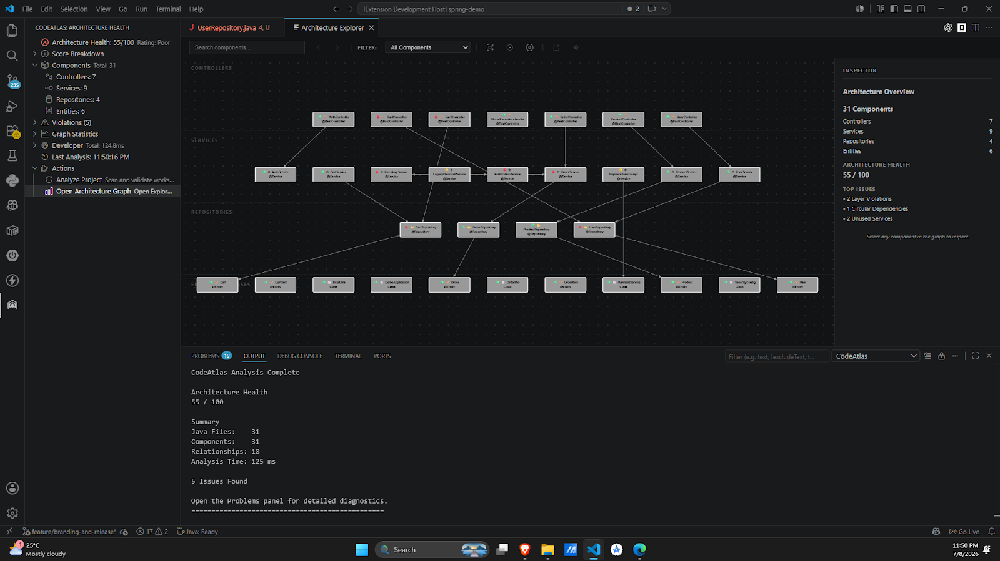
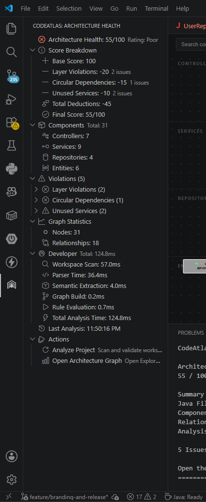
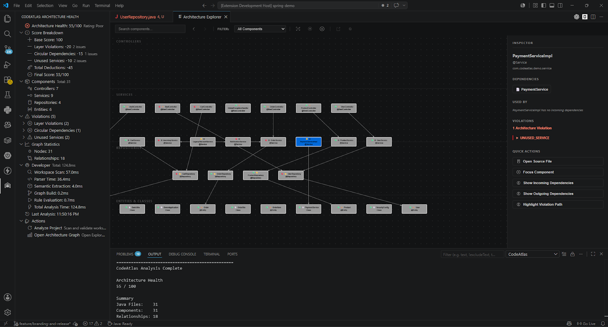

1. Installation & Setup
Install CodeAtlas directly from the Visual Studio Code Marketplace or via command line.
code --install-extension VarunKulkarni.codeatlas-vscode
Analyze, validate, and explore your service dependencies directly inside VS Code. Static AST parser with zero cloud execution, zero telemetry, and 100% deterministic rule scoring.

Click nodes to inspect bean stereotyping, annotations, and layer rules. Test architectural anti-patterns with preset scenarios below.
Complete macro-view of Spring Boot ApplicationContext. Clean Controller -> Service -> Repository boundaries.
Click any graph node to inspect Spring annotations, AST metadata, and dependency metrics.

Move beyond qualitative guesswork. CodeAtlas continuously evaluates your Spring Boot project against strict architectural rules, calculating an objective health score (0 - 100).
Isolate architectural debt before pull request review. CodeAtlas parses AST references to catch layer bypasses, circular dependencies, and dead code paths immediately.
UserController directly invokes UserRepository, bypassing the Service layer business boundary.
